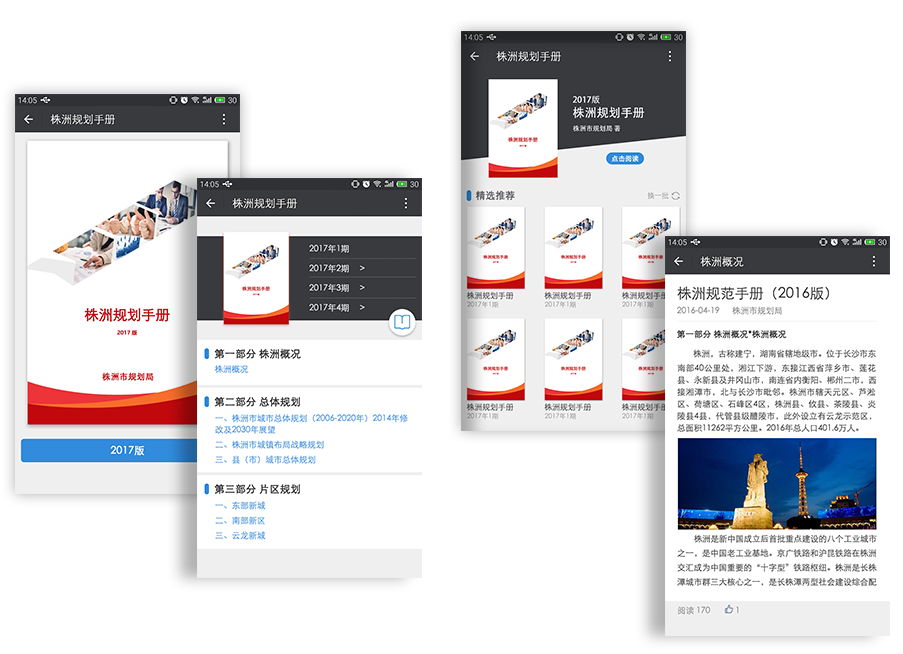

产品
应用
解决方案
客户案例
关于我们
流程审批
企业内刊
会议助手
任务管理
日程安排
意见反馈
公章管理
企业社区
企业知库
企业新闻
待办中心
资源平台
工资条
快递助手
企业邮箱
企业云盘
员工关怀
企业支付
企业证件管理
员工证件管理
企业招聘
人才库
移动客服/企业机器人
人脸识别
产品
大数据
企业内刊
功能亮点：
企业私有杂志社，可实时查阅图文并茂的期刊内容
亮点描述：
企业员工可通过手机端阅读企业内刊，培养企业文化。

 企业内刊
企业内刊